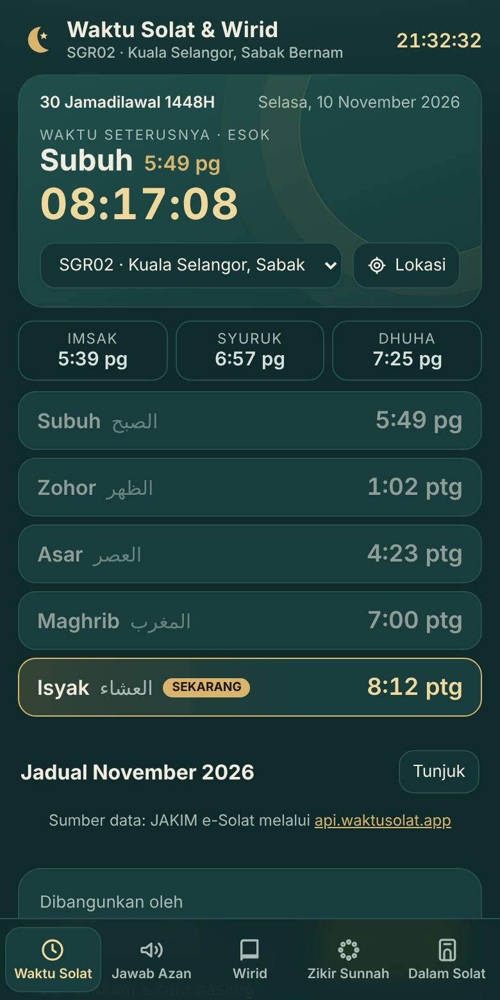
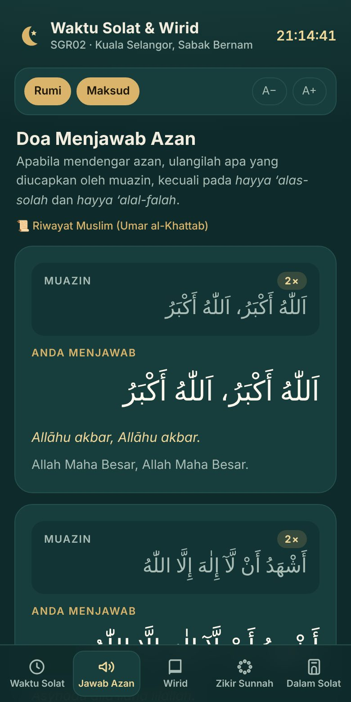
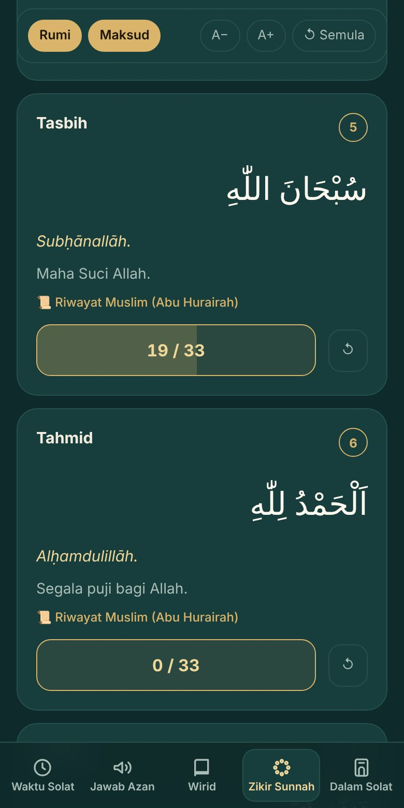

Waktu solat rasmi JAKIM untuk semua zon di Malaysia, kiraan detik ke waktu seterusnya, doa menjawab azan, wirid dan zikir sunnah selepas solat, serta bacaan di dalam solat — lengkap dengan teks Arab, rumi, maksud dan pembilang tasbih. Percuma, tiada log masuk, dan boleh dipasang di skrin utama telefon.
Data waktu solat: JAKIM e-Solat melalui api.waktusolat.app · Semua tetapan disimpan dalam telefon anda sahaja.
Imbas dengan kamera telefon untuk buka app
Pengenalan
Satu app ringkas dengan enam tab: Waktu (termasuk kalendar Hijri), Azan, Solat (bacaan dalam solat), Wirid, Zikir (selepas solat serta al-Ma’thurat pagi & petang) dan Yasin (Surah Yasin & tahlil) — tahu bila masuk waktu, dan amalkan bacaan sebelum, semasa dan selepas solat tanpa perlu membawa buku atau tasbih.
Waktu solat JAKIM
Imsak, Subuh, Syuruk, Dhuha, Zohor, Asar, Maghrib dan Isyak bagi zon pilihan, dengan waktu semasa ditanda SEKARANG.
Kiraan detik
Paparan besar baki masa ke waktu solat seterusnya, termasuk Subuh esok selepas Isyak.
Semua zon & GPS
Pilih daripada 60 zon JAKIM di seluruh Malaysia, atau tekan Lokasi untuk mengesan zon anda secara automatik.
Kalendar Hijri
Kalendar bulanan Masihi–Hijri mengikut takwim JAKIM, dengan hari kebesaran Islam, puasa sunat (Isnin/Khamis, Ayyamul Bidh, Arafah, Asyura) dan senarai tarikh penting akan datang.
Doa menjawab azan
Jawapan bagi setiap lafaz azan, termasuk Subuh, serta selawat dan doa selepas azan beserta sumber hadis.
Wirid & doa selepas solat
14 bacaan wirid yang lazim di Malaysia, diikuti doa selepas solat yang biasa dibaca imam — dari hamdalah dan selawat hingga penutup doa.
Zikir sunnah berdasarkan hadis
15 zikir dan doa selepas solat yang diajar Rasulullah ﷺ — setiap satu dengan sumber riwayat dan kelebihannya.
Al-Ma’thurat pagi & petang
Wazifah Sughra lengkap dengan versi pagi dan petang, pembilang bacaan, serta sumber hadis bagi setiap zikir.
Yasin & Tahlil
Surah Yasin penuh (Rasm Uthmani) dengan rumi, maksud dan penanda bacaan terakhir, doa selepas Yasin, serta tahlil ringkas dan Doa Tahlil.
Bacaan di dalam solat
Niat, takbir, iftitah, Al-Fatihah, rukuk, iktidal, sujud, tahiyat hingga salam — mengikut turutan dengan maksud.
Pembilang tasbih
Ketik butang setiap kali selesai satu bacaan. Telefon bergetar apabila cukup bilangan dan terus ke bacaan seterusnya.
Rumi, maksud & saiz huruf
Tunjuk atau sembunyi rumi dan maksud, serta besarkan tulisan Arab supaya selesa dibaca.
Tanpa internet
Selepas dibuka sekali, jadual bulan semasa disimpan dalam telefon. Wirid boleh dibaca walaupun tiada liputan.
Privasi
Tiada akaun dan tiada pengumpulan data. Zon, tetapan dan kiraan wirid disimpan dalam pelayar telefon anda sahaja.

Waktu solat & kiraan detik

Doa menjawab azan

Zikir sunnah & pembilang tasbih
Cara pemasangan
Pasang di skrin utama supaya boleh dibuka seperti app biasa — tanpa Play Store atau App Store, dan tanpa akaun.
Klik Install. App dibuka dalam tetingkap sendiri dan boleh dipin ke taskbar.
Selepas dipasang, buka app sekali ketika ada internet supaya jadual waktu solat bulan ini disimpan dalam telefon. Jika ditanya, benarkan akses lokasi untuk mengesan zon secara automatik — atau pilih zon sendiri.
Cara menggunakan
Empat langkah mudah.
Tetapkan zon
Pada tab Waktu Solat, pilih zon JAKIM anda daripada senarai atau tekan Lokasi. Zon ini diingati untuk kali seterusnya.
Lihat waktu & kiraan detik
Kad atas menunjukkan waktu solat seterusnya dan baki masanya. Tekan Tunjuk pada Jadual Bulanan untuk melihat waktu sebulan, atau tekan tarikh Hijri untuk membuka kalendar Hijri.
Pilih bacaan
Ketika azan, buka tab Azan. Selepas solat, pilih Wirid (amalan lazim di Malaysia) atau Zikir (sunnah selepas solat, atau al-Ma’thurat pagi dan petang) dan ketik butang kiraan — app akan ke bacaan seterusnya apabila cukup bilangannya. Tab Solat sesuai untuk belajar dan menyemak bacaan solat, manakala tab Yasin untuk bacaan Yasin malam Jumaat dan majlis tahlil.
Laraskan paparan
Guna Rumi dan Maksud untuk tunjuk/sembunyi terjemahan, A−/A+ untuk saiz huruf Arab, dan ↺ Semula untuk mula semula selepas solat seterusnya.
Soalan lazim
Dari mana data waktu solat diambil?
Daripada laman e-Solat JAKIM, melalui perkhidmatan awam api.waktusolat.app. Waktu yang dipaparkan sama dengan jadual rasmi JAKIM bagi zon tersebut.
Apakah maksud notis “Mod anggaran”?
Notis ini muncul jika app tidak dapat menghubungi pelayan waktu solat dan belum ada data tersimpan. Waktu dikira sendiri dalam telefon menggunakan parameter JAKIM, dan mungkin berbeza ±1–2 minit. Sambung ke internet dan buka semula app untuk mendapatkan waktu rasmi.
Zon yang dikesan oleh butang Lokasi tidak tepat.
Pilih zon yang betul secara manual daripada senarai. Pilihan anda akan disimpan dan digunakan seterusnya.
Adakah lokasi saya disimpan?
Tidak. Koordinat hanya dihantar ke api.waktusolat.app sekali untuk menentukan zon JAKIM. App ini tidak mempunyai pelayan sendiri dan tidak menyimpan lokasi anda di mana-mana.
Bilakah kiraan wirid bermula semula?
Kiraan disimpan sepanjang hari dan bermula semula secara automatik setiap hari baharu. Tekan ↺ Semula untuk mengosongkan semua kiraan, atau ↺ pada satu bacaan sahaja.
Bilangan bacaan berbeza dengan amalan di masjid saya.
Bilangan dalam app mengikut amalan wirid yang lazim di Malaysia. Ikutlah bimbingan guru atau imam setempat. Jika terdapat kesilapan pada teks Arab, rumi atau maksud, mohon maklumkan melalui WhatsApp di bawah.
Bagaimana mengemas kini app?
Tiada apa yang perlu dibuat. Setiap kali dibuka dengan internet, app akan memuatkan versi terkini secara automatik.
Sokong app ini ❤️
Waktu Solat & Wirid adalah percuma. Jika ia memberi manfaat kepada anda, sumbangan melalui DuitNow QR membantu penyelenggaraan dan ciri baharu. Tangkap layar kod QR, kemudian imbas melalui app bank atau e-wallet. Derma kepada: Ibrahim bin Kadri 019-300 2591 (WhatsApp)